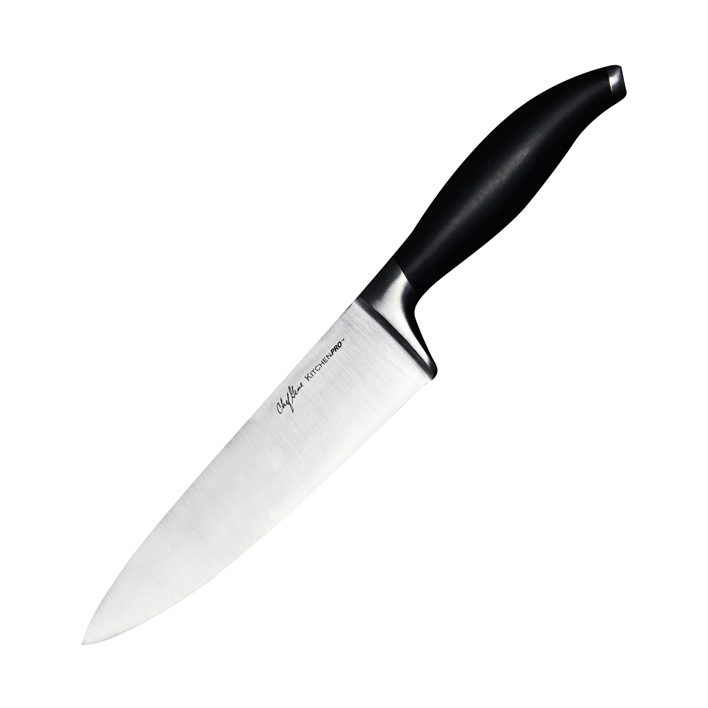
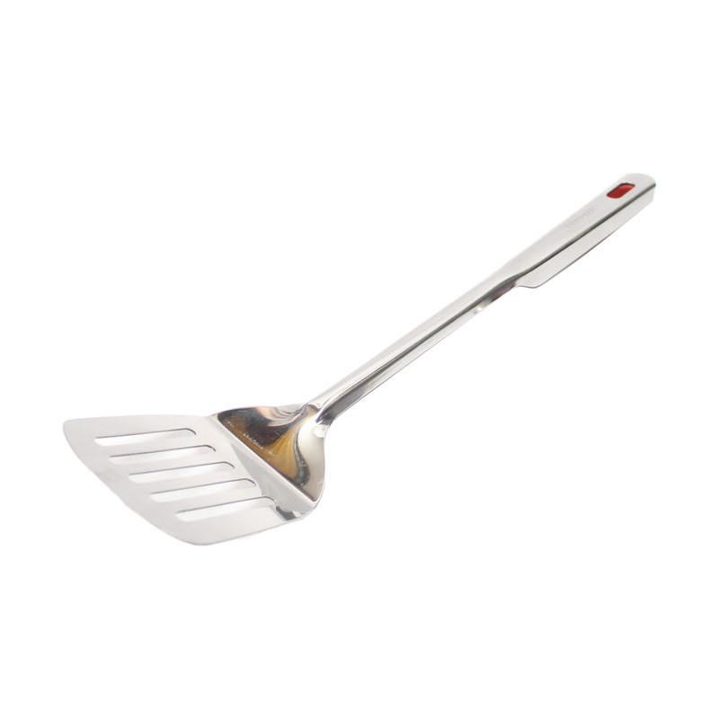
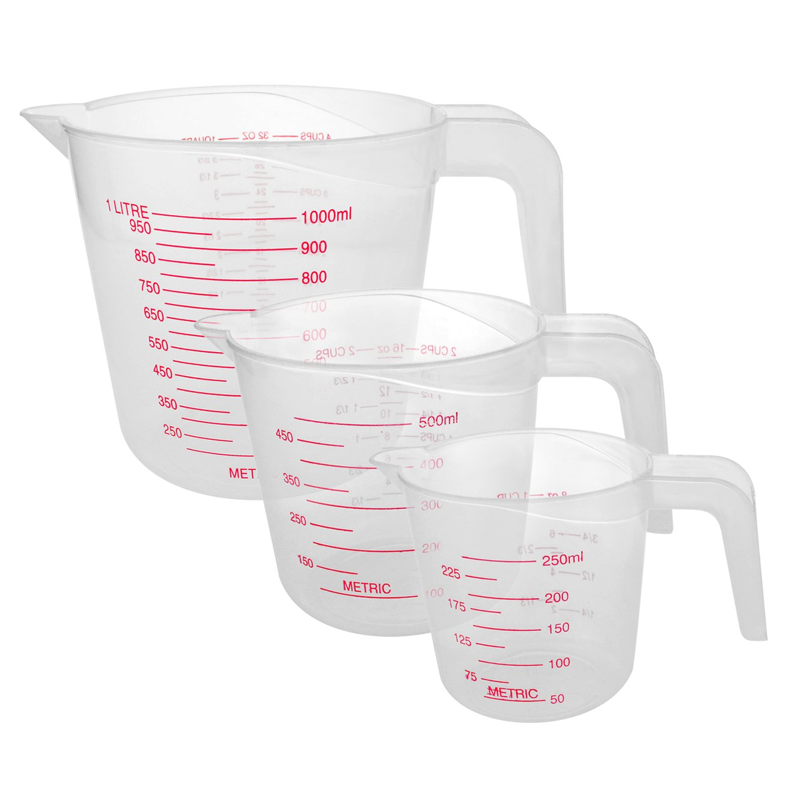
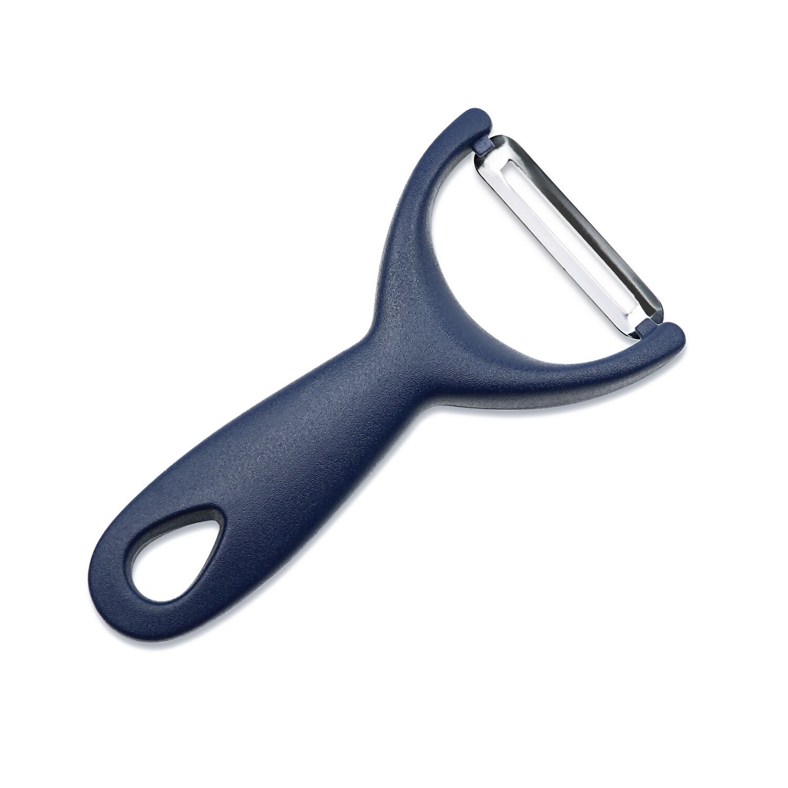
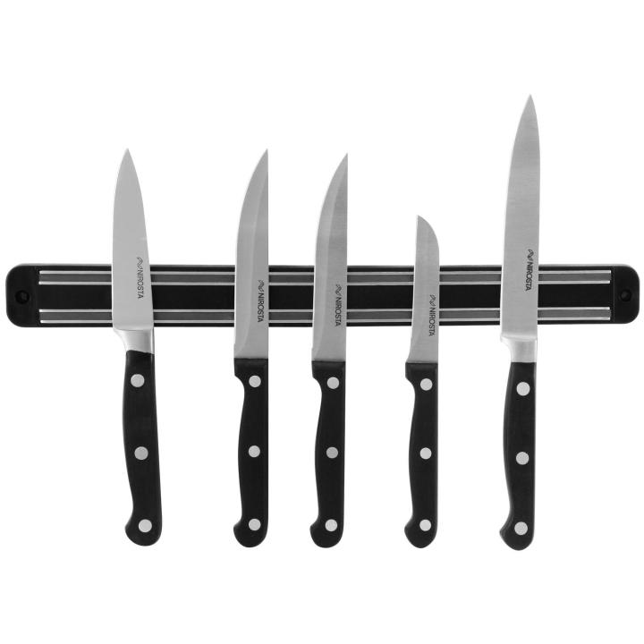
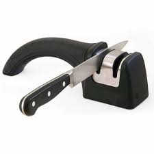
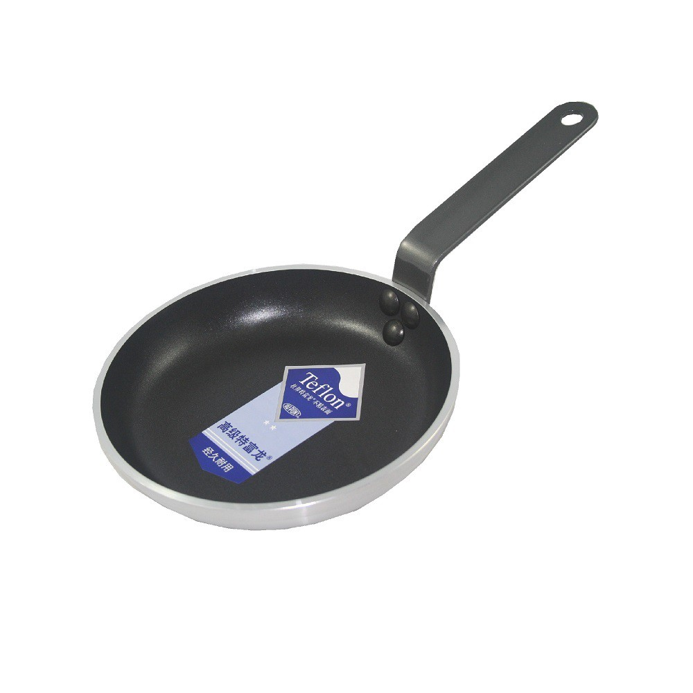

Knife
A versatile knife for all your cooking needs.
NPR 2,500
View Details

Spatula
Perfect for flipping and serving your favorite meals.
NPR 800
View Details

Whisk
Ideal for mixing and whisking ingredients.
NPR 500
View Details

Cutting Board
Durable and easy to clean for all your chopping needs.
NPR 1,200
View Details

Measuring Cups
Accurate for measuring the ingredients for your recipes.
NPR 600
View Details

Peeler
Sleek and easy to use for peeling vegetables.
NPR 150
View Details

Knife Holder
Easy equipment to place your sharp knives.
NPR 300
View Details

Knife Sharpner
Make your trusty knives as sharp as possible.
NPR 400
View Details

Non-Stick Pan
A frying pan for cooking your dishes efficiently.
NPR 1400
View Details